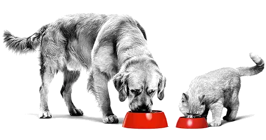

Более 55 лет
в области здорового питания
ROYAL CANIN®
уже более 55 лет создает
индивидуализированное питание
и помогает владельцам дать своим питомцам самое важное — здоровье на
каждом этапе жизни.
Рационы ROYAL CANIN®
- способствуют формированию фундамента здоровья котят и щенков с первых дней
- оказывают поддержку здоровья взрослых питомцев на каждом этапе жизни
- помогают раскрыть природный потенциал породистых животных
- обеспечивают адресную поддержку чувствительных систем организма
- способствуют поддержанию здоровья животных при различных заболеваниях
Роль нутриентов
в рационах Royal Canin®
в рационах Royal Canin®
Нутриенты — группы питательных веществ, которые
обеспечивают питомца энергией, участвуют в формировании тканей и
многих метаболических процессов.
Нутриентный подход Royal Canin позволяет учесть
индивидуальные потребности питомца и создавать
рационы с правильной комбинацией питательных веществ, необходимых
для поддержки здоровья.

Нужна помощь с выбором РАЦИОНА?
Ответьте на несколько вопросов о своём питомце,
и мы подберём рацион с учётом его индивидуальных
потребностей